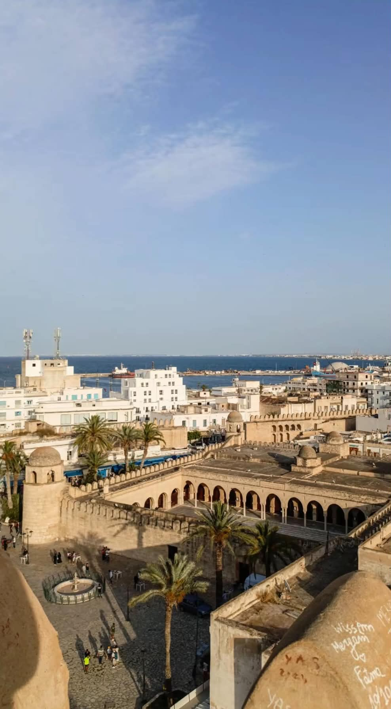

Fondé en 796 par le gouverneur Harthama Ibn Ayan, le Ribat de Monastir est l'une des plus anciennes forteresses de la côte tunisienne. Il servait à la défense du littoral et à la surveillance de la mer.
Voir la localisation sur Google MapsLe Ribat est un exemple remarquable de l'architecture militaire islamique. Il a été agrandi et transformé au fil des siècles.
Ses remparts, ses tours de surveillance, sa cour intérieure et sa tour de guet témoignent de son importance stratégique dans l'histoire de Monastir.

Le Ribat de Monastir est aujourd'hui l'un des monuments historiques les plus emblématiques de la ville.